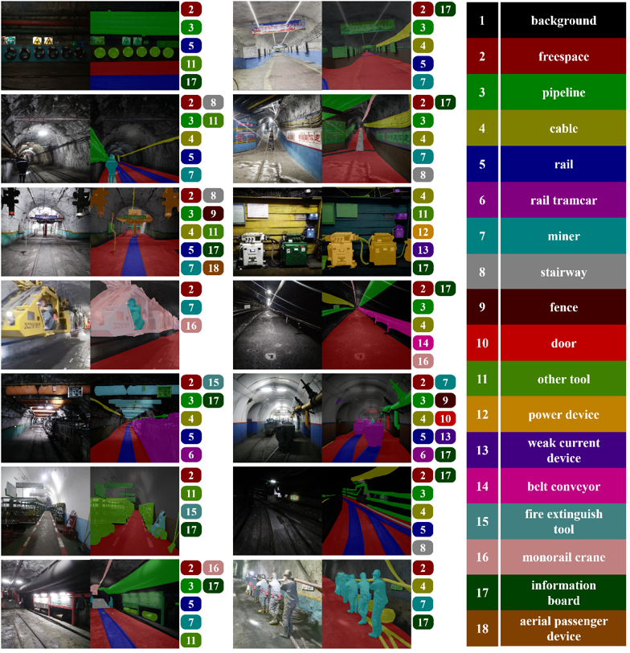

Dataset Overview
Currently, most available datasets focus on open-pit mining, leaving a gap for underground mining datasets. This shortage hinders the use of smart technologies in underground mines. To address this, we present the Underground Mine Scenes Semantic Segmentation (UMSSS) dataset. Data was gathered from over ten mines in various locations to capture the complexity of mining environments. The UMSSS dataset is the first open-source semantic segmentation resource for underground mining, covering diverse lighting and a wide range of underground objects.
Dataset Introduction
■ Dataset contains 4200 high-quality annotated images and 18 annotated categories.
■ The UMSSS dataset is the first open-source semantic segmentation dataset for underground mines, widely covering varying lighting scenarios and diverse underground objects.
Dataset Download
You can download the UMSSS dataset from the following link:
Please fill out the application form in the link and send it to the email address ykh@cumtb.com.
Citation
If you use the UMSSS dataset in your research, please cite the following paper:
UMSSS: A Visual Scene Semantic Segmentation Dataset for Underground Mines
Contributors
The following individuals contributed to the development and release of the UMSSS dataset:

Prof. Yang, Kehu
Lead Researcher.
Dean of the School of Artificial Intelligence, China University of Mining and Technology, Beijing.
Jiawen Wang
Lead Researcher, specializing in underground mining and computer vision applications.
Chenfei Liao
Data Collection and Annotation, with expertise in remote sensing and image processing.
Zhongqi Zhao
Data Collection and Annotation, with expertise in remote sensing and image processing.
Lianghui Li
Project Coordinator, overseeing the overall project and ensuring timely delivery of datasets.
Xuan Gao
Dataset Management, ensuring high-quality and well-organized data for research purposes.

Suna Pan
Dataset Management, ensuring high-quality and well-organized data for research purposes.
Fangzhen Shi
Dataset Management, ensuring high-quality and well-organized data for research purposes.
Yudong Wang
Dataset Management, ensuring high-quality and well-organized data for research purposes.
Weijie Zhou
Dataset Management, ensuring high-quality and well-organized data for research purposes.
Jingchuan Chen
Dataset Management, ensuring high-quality and well-organized data for research purposes.
Zhijian Li
Dataset Management, ensuring high-quality and well-organized data for research purposes.
Contributing Organizations
The following organizations contributed to the development and release of the UMSSS dataset:
- China University of Mining And Technology, Beijing - Research Support
- Guotun Mining Corporation - Data Collection Assistance
- School of Artificial Intelligence & School of Energy and Mining Engineering - Dataset Management and Distribution